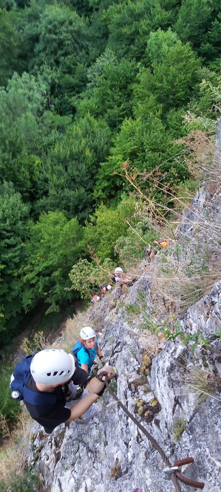

Prima experienta(Turnul lui Liman)
Prima mea intalnire cu un traseu de via ferrata a fost la Valea Lui Liman, traseul Turnul lui Liman, un traseu usor bun pentru incepatori, si cel mai apropiat de Timisoara.Prima data pe un traseu, eram putin ingrozit de ideea ca as putea sa cad de pe stanca, chit ca stiam ca voi fi prins in ham. Probabil ceea ce m-a ajutat foarte mult a fost experienta acumulata inainte la parcurile de aventura din copaci. Traseul l-am finalizat cu succes fara nici o problema, experienta fiind minunata si de neuitat, si am ramas nerabdator pentru urmatoarea intalnire cu asa ceva.
A doua vizita(Turnul lui Liman)
A doua si a treia mea vizita au fost tot la traseul Turnul lui Liman pentru a reusi sa ma acomodez cu tehnici, inaltime si ehcipament, pentru ca pe viitor sa fiu pregatit de trasee mai dificile.


Al treilea si al patrulea traseu(Mocanita si Casa zmeului)
Aceste doua trasee au fost mult mai dificile decat primul, astfel ca toata experienta acumulata mi-a fost de folos pentru a reusi sa trec de ele fara sa ma accidentez. Al patrulea traseu mi-a luat destul de mult si a fost destul de dificil, dar nu m-au putut pregati pentru ceea ce a urmat urmatoarea zi.
Al cincelea si al saselea traseu(suncuius)
Aceste doua trasee mi-au creeat multe dificultati, am fost nevoit sa dau si inapoi odata deoarece nu mai stiam cum sa trec, dar la a doua incercare am reusit. La unul din cele doua am avut un perete mare vertical de urcat ceea ce a fost dificil deoarece aveam foarte putine prize, dar intr-un final l-am dus la capat